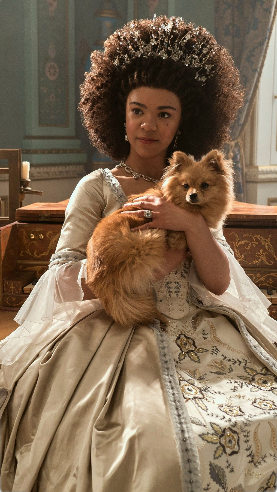
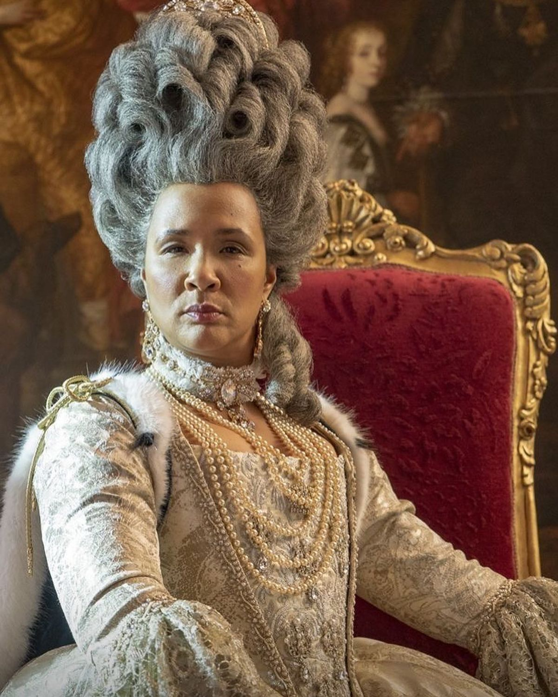

Romance con peso
No es una historia ligera: cada gesto amoroso está atravesado por sacrificio, incertidumbre y una conexión emocional muy madura.
Spin-off favorito
Una historia más íntima, elegante y dolorosa, donde el amor no aparece como fantasía sino como una promesa que hay que sostener.
"La serie funciona porque convierte la realeza en algo profundamente humano."


No es una historia ligera: cada gesto amoroso está atravesado por sacrificio, incertidumbre y una conexión emocional muy madura.
Charlotte no solo se enamora; también aprende a sostener una corona, una corte y una vida pública que nunca pidió.
El universo visual sigue siendo lujoso, pero aquí se siente más solemne, más dorado y mucho más melancólico.
Por qué impacta
Charlotte llega a Inglaterra sin conocer al rey y debe entrar de golpe a una vida marcada por el protocolo y la vigilancia.
La distancia emocional de George vuelve el romance más complejo y profundo que en la serie principal.
La línea temporal del presente le da otro peso a todo lo vivido y convierte la historia en algo mucho más conmovedor.
La serie Queen Charlotte: A Bridgerton Story es una precuela de Bridgerton que se enfoca en el origen de la reina Charlotte, un personaje que en la serie original aparece como fuerte, autoritaria y hasta un poco sarcástica. Aquí, en cambio, la vemos joven, vulnerable y enfrentándose a un mundo completamente desconocido.
Desde el principio, la historia deja claro que no estamos ante un romance típico. Charlotte es enviada a Inglaterra para casarse con el rey George III sin haberlo conocido antes. La relación comienza con incomodidad y desconfianza, porque George se muestra distante y tiene comportamientos que Charlotte no logra entender. Esa tensión inicial es clave, porque poco a poco se transforma en algo mucho más profundo.
A medida que avanza la serie, se revela que el rey sufre episodios de salud mental que afectan su comportamiento y su relación con Charlotte. Este aspecto está tratado de forma bastante seria y emocional, y es lo que le da a la serie un tono más intenso que Bridgerton. No se trata solo de enamorarse, sino de sostener ese amor cuando la situación se vuelve difícil.
Otro elemento interesante es la forma en que la historia se mueve entre dos líneas temporales. Por un lado, vemos el pasado, donde se desarrolla el romance. Por otro, el presente, donde aparece la Charlotte adulta, ya convertida en reina, lidiando con las consecuencias de todo lo que vivió. Este contraste hace que muchas escenas tengan un peso emocional más fuerte.
También se profundiza mucho más en personajes secundarios. Lady Danbury, por ejemplo, tiene una historia propia bastante potente que muestra cómo logró posicionarse en la sociedad. Lo mismo ocurre con Violet Bridgerton joven, que aporta una visión más idealista del amor y sirve como contrapunto a la relación de Charlotte.
En términos de estilo, la serie mantiene el sello visual de Bridgerton: vestuarios elaborados, palacios impresionantes y una estética muy cuidada. Pero el tono general es más melancólico y reflexivo. Hay momentos románticos, sí, pero también muchos momentos duros.
En general, lo que hace que esta serie destaque es que cuenta una historia cerrada en pocos episodios, lo que permite desarrollar mejor a los personajes y darles un arco completo. Por eso, mucha gente siente que es más intensa y emocionalmente satisfactoria que la serie principal.